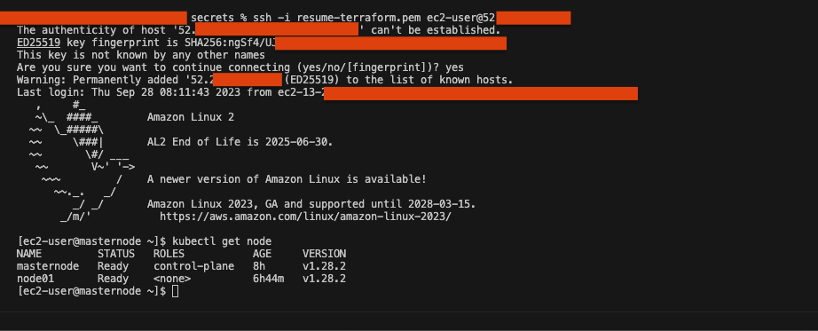

Building a Resume Website on AWS. Using Nginx, Terraform, Kubernetes, Docker, Jenkins and Sonarqube.
PengHian Ang
June 7, 2023
My primary objective for this project is to demonstrate my expertise as a DevOps Engineer while expanding my technical skill set. I believe that true learning happens through hands-on experience and problem-solving.
Therefore, I will actively engage in the development process to showcase my knowledge and improve my abilities along the way.
Additionally, I aim for this project to serve as a comprehensive guide for individuals looking to establish their own DevOps infrastructure. By documenting the entire process and sharing my experiences, I hope to provide valuable insights and practical instructions that can assist others in successfully implementing similar systems.
Prerequisites
-
AWS Account:
An AWS account is essential for using Terraform to build projects. It allows Terraform to interact with and manage AWS resources, facilitating infrastructure provisioning and management.
-
Terraform Installed:
Terraform must be installed on your computer to build this project. Terraform is an infrastructure-as-code (IaC) tool that automates and manages cloud resources. Installing Terraform on your PC enables you to define your infrastructure as code and deploy it to AWS.
-
Git Installed:
Git must be installed on your computer to clone the project from my GitHub repository. Git is a version control system that facilitates efficient collaboration and code change tracking.
Deciding the Infrastructure Setup
For this stage of the project (hightlighted in blue), I have chosen the following
infrastructure setup. The image below illustrates the setup:

- Terraform: For AWS resource creation.
- CloudFront: To boost user experience with caching services.
- Route 53 and AWS Certificate Manager: For DNS management and SSL certificate configuration for angpenghian.com.
- AWS Application Load Balancer: Load balancing across EC2 instances, currently a single instance for proof of concept.
- AWS Internet Gateway: Provides internet access to VPC resources.
- Kubernetes cluster: Consists of a master and a worker node. NGINX deployment on worker node, leveraging PV and PVC for file reading on EC2 server. Service made public via NodePort.
instructions:
- Choose a command terminal
Open a terminal (Command Prompt on Windows, Terminal on Mac or Linux).
- Choose a base folder
Navigate to the empty folder where you want to clone the repository. You can use the cd (change directory) command to do this. For example:
cd /path/to/your/folder - Clone the repository
Once you're in the right directory, use the git clone command followed by the URL of the repository:
git clone https://github.com/angpenghian/resume.git - Navigate to nessary folder
After cloning the GitHub repository, use the subsequent command to navigate to the terraform directory that includes the necessary Terraform and Bash scripts for configuring the infrastructure.
cd /Your Folder Directory/Resume-website/ - Create secrets folder
First, create a new directory called 'secrets' manually or using the command below:
mkdir secrets - Configure and obtain AWS credentials
Next, log into your AWS root user account. Use the console's search bar to find the IAM service. Inside the IAM interface, navigate to the Users section and choose 'Add users'.
 Follow the on-screen instructions to create your IAM user.
Follow the on-screen instructions to create your IAM user.
 Once the user is created, click on it. In the 'Security
credentials' tab, find 'Create access key'.
Once the user is created, click on it. In the 'Security
credentials' tab, find 'Create access key'.
 It's crucial to save and document both keys for future reference.
It's crucial to save and document both keys for future reference.

- Configure and obtain AWS key pairs
Now, create a key pair to enable SSH access into the AWS EC2 machines you'll be making. Use the console's search bar to find "Key pairs". In the Key pairs section, select Create key pair. Take note of the region you're in because key pairs are region-specific.
 After selecting "Create key pair", input your preferred key name.
After selecting "Create key pair", input your preferred key name.
 Upon completion, the key pair will be generated and a .pem file
will be downloaded.
Upon completion, the key pair will be generated and a .pem file
will be downloaded.
- Place secrets and key pair
Afterward, save the access keys and key pairs in the given format within the 'secrets' directory.

- Setup Terraform
Now that your security credentials are properly set up, there are still a few files you need to edit for the Terraform setup.
- Configure terraform provider
In the provider file, you can modify the access key location if you've stored it elsewhere.
- Configure terraform variables
For terraform.tfvars, you can modify parameters such as the EC2 machine image, your instance type, private key path, the domain you're using, and a validated SSL certificate ARN from AWS Cert Manager.
- Initialize terraform
Once you've finished editing the files, you can initialize the terraform directory. navigate to the terraform directory (Resume-website > terraform > server-based) that includes the necessary Terraform and Bash scripts for configuring the infrastructure. Than type the following command:
terraform init
- Terraform install start
If you have cloned my repository, you would have the nessary terraform files to build the infrastructure. navigate to the server-based directory (Resume-website > terraform > server-based) that includes the necessary Terraform and Bash scripts for configuring the infrastructure. Than type the following command:
terraform apply - Terraform install error handling
After running the terraform apply command, it might have a error for remote-exec. Type terraform apply again.
terraform apply
- Take note of kubeadm join command
Once the initialization is complete, you can will be able to see a kudeadm join command. Take note of the kubeadm-join command and the ip addresses. For the example it would be:
sudo kubeadm join [your-ip]:6443 --token [your-token] --discovery-token-ca-cert-hash [your-hash]
- Change permission for secret key
Now that the infrastructure is built, you would need to SSH into the EC2 instance. But before that we would need to change the permission of the key.pem file. Navigate to where you have stored your key.pem file. for me it would be Resume-website > secrets Type the following command:
chmod 400 [your-key.pem] - SSH into node01
Now that the infrastructure is built, you can access the server via SSH. Navigate to where you have stored your key.pem file. for me it would be Resume-website > secrets Currently we are trying to setup the Nginx kubernetes deployment on node01. so we would need to ssh into it. Type the following command:
ssh -i [your-key.pem] ec2-user@[your-ip]
- Node01 join kubernetes cluster
Using the previous kubeadm join command, we will now join the node01 to the kubernetes cluster. Type the commands saved from the previous step
- Check node node01 status
Now that node01 is joined to the kubernetes cluster, we can check the status of the nodes. Firstly we need to SSH into the masternode and use the kubernetes command to check the status of the nodes. Type the following commands:
ssh -i [your-key.pem] ec2-user@[your-ip]
kubectl get node - Navigate to kubernetes yaml file
We have established that node01 has joined the kubernetes cluster. Now we can deploy the nginx deployment. Firstly navigate to the nginx directory. For my example it would be /home/ec2-user/website/kubernetes-setup
cd /home/ec2-user/website/kubernetes-setup - Why is there website folder in the server
You may ask how did this website folder get into the EC2 instance. This is because we have used the terraform function called provisioner to copy the website folder into the EC2 instance. Under the terraform directory (Resume-website > terraform > server-based) there is a terraform file called 6-ec2.tf If need be you are able to change this according to your needs.
- Create nginx deployment
Now that we understand how the website folder got into the EC2 instance, we can now deploy the nginx deployment. Navigate to the kubernetes script directory. For my example it would be /home/ec2-user/website/kubernetes-setup Type the following command:
kubectl apply -f kubernetes-nginx-setup.yaml - Check nginx deployment status
We have now successfully deployed the nginx deployment. Now we can check the status of the deployment. Type the following command:
kubectl get all - Check website
Check if the nginx deployment is working. Open a browser and type in the url

- Domain Name
You might wonder how is the url is decided. Other than buying your own domain on AWS. In the terraform file 8-route53.tf, you can see that I have created a record set for the domain angpenghian.com
- Complete
We have now completed the deployment of the nginx deployment. Part 2 of this project will be to deploy the jenkins deployment and setup the CI/CD pipeline.
Building CI/CD for the infrastructure setup.
Now that we have completed the infrastructure setup for the nginx deployment, we can now setup the CI/CD pipeline for the infrastructure.
For this stage of the project (hightlighted in red), I have chosen the following
infrastructure setup. The image below illustrates the setup:
instructions:
- Choose a command terminal
Open a terminal (Command Prompt on Windows, Terminal on Mac or Linux).
- SSH into Jenkins
If you have followed the steps from the previous stage, you would have the nessary terraform files to build the infrastructure. Navigate to the secrets directory (Resume-website > secrets) and SSH into the jenkins EC2 instance. Type the following command:
ssh -i [your-key.pem] ec2-user@[your-ip] - Jenkins join kubernetes cluster
Now that we are inside the jenkins EC2 instance, we should join the jenkins EC2 instance to the kubernetes cluster. Type the following command:
sudo kubeadm join [your-ip]:6443 --token [your-token] --discovery-token-ca-cert-hash [your-hash] - Check node jenkins status
Now that jenkins is joined to the kubernetes cluster, we can check the status of the nodes. Firstly we need to SSH into the masternode and use the kubernetes command to check the status of the nodes. Type the following commands:
ssh -i [your-key.pem] ec2-user@[your-ip]kubectl get node - Navigate to kubernetes yaml file
We have established that jenkins has joined the kubernetes cluster. Now we can deploy the jenkins deployment. Firstly navigate to the nginx directory. For my example it would be /home/ec2-user/website/kubernetes-setup
cd /home/ec2-user/website/kubernetes-setup - Create jenkins deployment
Navigate to the kubernetes script directory. For my example it would be /home/ec2-user/website/kubernetes-setup Type the following command:
kubectl apply -f kubernetes-jenkins-setup.yaml
- Check jenkins website
Check if the jenkins deployment is working. Open a browser and type in the url
- Domain Name
You might wonder how is the url is decided. Other than buying your own domain on AWS. In the terraform file 8-route53.tf, you can see that I have created a record set for the domain jenkins.angpenghian.com
- SSH masternode
Now that we have deployed the jenkins deployment, we need to unlock the jenkins website. To do that we need to SSH into the masternode to get the initial admin password.
- Get Jenkins pod name
First we need to get the initial admin password. To do that we need to get the pod name of the jenkins deployment. Type the following command:
kubectl get pods --namespace=devops-tools - View Jenkins pod log
Now that we have the pod name, we can view the log of the jenkins pod. Inside the log we can find the initial admin password. Type the following command:
kubectl logs [Jenkins-pod-name] --namespace=devops-tools - Getting started jenkins
Now that we have the initial admin password, we can now unlock the jenkins website. Enter the initial admin password and click continue.
- Customize jenkins
Click on install suggested plugins and wait for the plugins to be installed.
- Create first admin user
Create your first admin user. Input your username, password, full name and email. Save and continue.
- Instance configuration
Click on save and finish.
- jenkins is ready
Click start using jenkins.
- New item
Click on new item, to create a new pipeline.
- New freestyle project
Input the name of the project and click freestyle project. For my example I have named it resume-website. After that click ok.
- Source code management
Click on source code management and select git. Input the repository url. For my example it would be:
https://github.com/angpenghian/Resume-website
and select the branch you want to build, for my example it would be main. - Build triggers
Click on build triggers and select GitHub hook trigger for GITScm polling. Click save.
- GitHub settings
Now we need to setup the GitHub settings. Click on the GitHub settings tab.
- GitHub webhooks
Click on the GitHub webhooks tab.
Click on add webhook.
Enter the payload url, for my example it would be: http://jenkins.angpenghian.com:32000/github-webhook/
Under which events would you like to trigger this webhook? select let me select individual events.
Under the individual events, select push and pull request.
Once done click on add webhook. - Jenkins test
Go back to jenkins and click on build now.
You should see the build successful if you have followed the steps correctly. - Jenkins last build steps
Click on configure, select the build steps and Add build step. Enter the following commands into the execute shell:
scp -r /var/jenkins_home/workspace/resume-website/website/* ec2-user@:/home/ec2-user/website/ - Change ec2-user password for masternode and node01
Following the previous steps first SSH into the masternode and node01. Once you are in the masternode and node01, type the following command:
sudo passwd ec2-user
Enter the new password and confirm the new password. - Get jenkins pod name
Now we need to create a secret for the jenkins pods to access the nginx deployment. First SSH into the masternode and type the following command:
kubectl get pods --namespace=devops-tools - SSH into jenkins pod
Copy the jenkins pod name and SSH into the jenkins pod. Type the following command:
kubectl exec -it [jenkins-pod-name] --namespace=devops-tools -- /bin/bash - Keygen for jenkins pod
Now that we are inside the jenkins pod, we need to create a secret. Type the following command:
ssh-keygen
When prompted for the file in which to save the key, press Enter. This accepts the default file location. When prompted, enter a passphrase for the key. You can also leave the passphrase blank. - Copy ssh-copy-id for jenkins pod
Now we need to copy the public key to the jenkins pod. Type the following command:
ssh-copy-id ec2-user@masternode-public-ip
Enter the password for the ec2-user. Do the same for other nginx nodes. - Testing CI/CD function
Now that we have setup the CI/CD pipeline, we can test it. As you can see from the image below, as im writing this the live website is still on the old version.
Now we can make a change to the website and push it to the github repository.
Type the following commands to push the changes to the github repository:git add .git commit -m 'update'git push